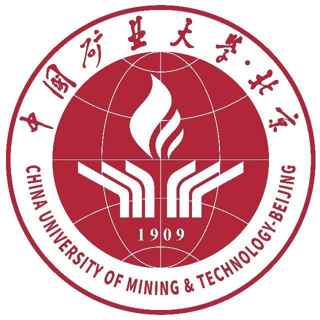
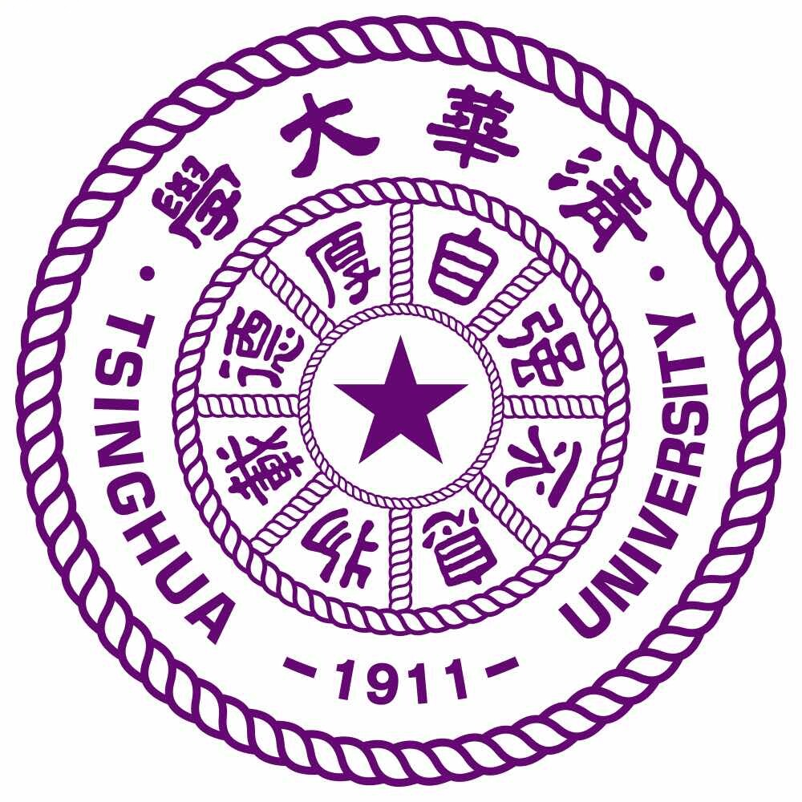
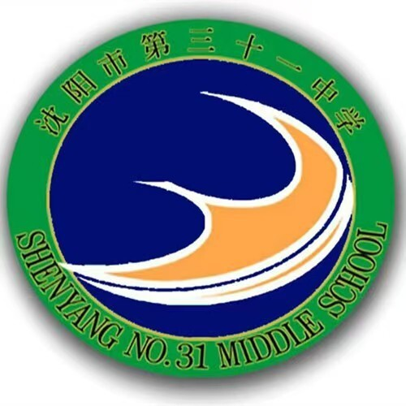
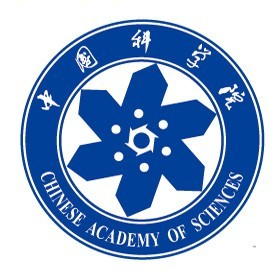
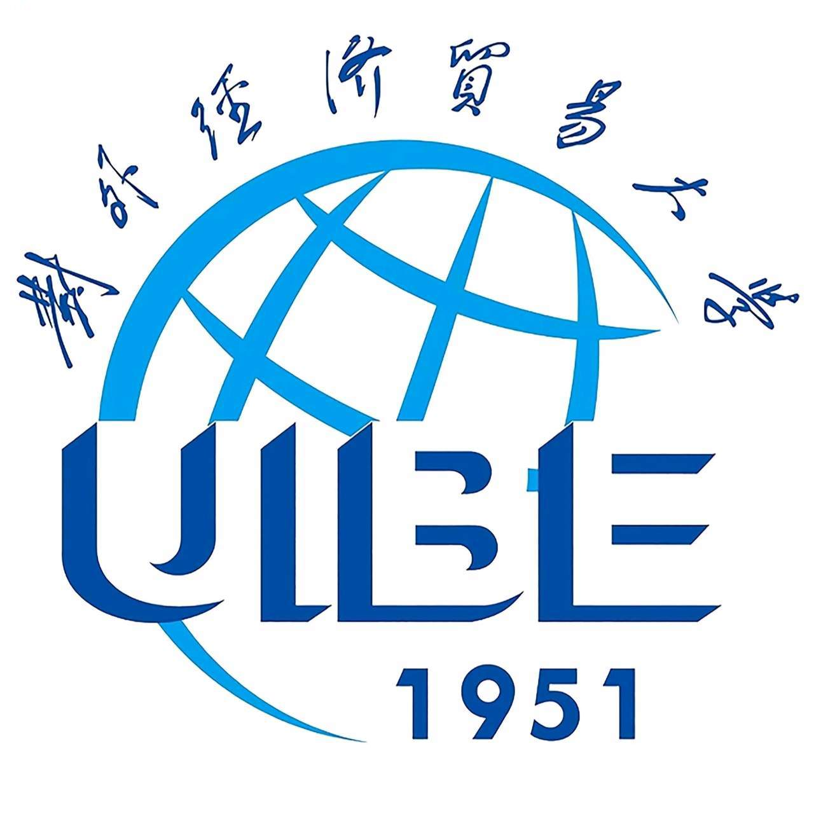

Academic Curriculum Vitae | Last updated: September 6, 2026
Research Assistant · member of Tsinghua VIN Lab
News
Updated
SDRA submitted to AAAI 2027
Co-authored research on a vision-language-model-enhanced RL agent for heavy-duty vehicle eco-driving. The manuscript reports a 6.7% matched-distance fuel reduction and compares human driving, the temporal agent, and the complete spatiotemporal architecture.
Selected as Project Leader for a CUMTB undergraduate research and innovation project
Led the approved “Eye of Demeter” project on energy-efficient chicken-farm technology for rural revitalization.
Co-authored a REM2025 conference paper
Studied rule-based energy management for diesel-hydrogen hybrid vehicles and renewable-energy utilization.
Joined Tsinghua VIN Lab
Started undergraduate research with Academician Li Jun's Research Group at Tsinghua University.
Won first prize in the university-wide line-following car competition
Served as hardware and debugging lead for the competition project.
Led teams to major competition awards
Led the team to the First Prize in the Beijing Energy/Water Conservation and Low-Carbon Emission Reduction Social Practice and Technology Competition and received the “Best Crisis Response” Award at BIMUN.
Built an open-source map of autonomous-driving world models
Contributed papers, codebases, and research resources to the Awesome Autonomous Driving World Model repository.
Completed a remote research internship at the Institute of Automation, Chinese Academy of Sciences
Completed introductory research training through literature review and technical investigation.
Led student organizations and academic delegations
Served as Vice President of the University Employment & Entrepreneurship Association, President of the Model United Nations Association, and delegation head for BIMUN, NIMUN, and UIBE MUN.
Research Interests
World models and their applications in autonomous driving and embodied intelligence; intelligent manufacturing; machine vision; time-series forecasting; eVTOL and low-altitude autonomous systems.
Education

China University of Mining and Technology, Beijing (CUMTB)
B.Eng. in Intelligent Manufacturing Engineering

Tsinghua University, School of Vehicle and Mobility
Jointly Supervised Undergraduate Researcher, Academician Li Jun's Research Group
Host advisor: Prof. Huang Chaosheng Home advisor: Prof. Zhang Yunjiu

Shen Yang No.31 Senior High School
Robotics Club Member
Built a competition-ready robotics project, sparking an early interest in research; pandemic restrictions prevented national-submission participation.
Research Experience
RA member of Tsinghua VIN Lab
Research affiliation
Project Leader · CUMTB Undergraduate Research and Innovation Project
Time-Series Forecasting and World Models for Autonomous Driving
Academician Li Jun's Research Group, School of Vehicle and Mobility, Tsinghua University
Role: Jointly Supervised Undergraduate Researcher
Study time-series forecasting and world-model applications in autonomous driving through trajectory-data processing, literature comparison, experiments, and result analysis.
Project Leader, Undergraduate Research and Innovation Project, Office of Academic Affairs, CUMTB
“Eye of Demeter - Technology Empowering Rural Revitalization: An Energy-Efficient Chicken Farm Leading a New Chapter in Green Agriculture” (Advisor: Prof. Zhang Yankui)
Lead proposal design, task allocation, advisory coordination, and milestone management from initiation through execution.
Team Member, Undergraduate Innovation Training Program, CUMTB - Ivy-Inspired Soft Climbing Robot
Advisor: Prof. Li Yan Role: bio-inspired suction-cup design
Lead bio-inspired adhesion design and multi-surface testing; support integration of pneumatic, SMA, retraction, and visual-perception modules.

Remote Research Intern, Institute of Automation, Chinese Academy of Sciences (Beijing)
Research internship
Completed introductory research training through literature review and technical investigation.
2025 Zhengxian Chen, Chenggang Zhang, Yuyang Pan, Jingyue Zheng, Fojin Zhou, Peng Ni, Yichong Li, Junyi Wang, Tianyang Gong, Xun Hu, Minhao Gao, Yuxing Wu, Mingyang Li, Pengyi Xiao, Mingqiang Wang, Jun Li. Energy Management Method for Diesel Hydrogen Hybrid Vehicles and Evaluation of Renewable Energy Applications.REM2025, Applied Energy Symposium and Forum. Co-author. View paper
Under Review
Under review Jiwei Yang, Zhengxian Chen, Pengyi Xiao, Weihua Pan, Chenggang Zhang, Lei Yang, Wenfeng Guo, Chaosheng Huang, Jun Li. SDRA: A Spatiotemporally Decoupled RL Agent Enhanced by a Vision-Language Model for Heavy-Duty Vehicle Eco-Driving.AAAI 2027. Co-author; under review. View manuscript
Works in Progress
One patent application and one software-copyright application are in preparation as outputs of the undergraduate research and innovation project.
Open-Source Contributions
Curator and Contributor, Awesome Autonomous Driving World Model |GitHub Repository
Curated papers, codebases, and research resources on autonomous-driving world models for a structured, accessible literature map.
Selected Engineering and Innovation Projects
Intelligent Line-Following Car Competition Project - 1st Overall University-Wide
Role: Hardware and Debugging Lead
Led vehicle assembly, module integration, debugging, and fault diagnosis for stable competition performance.
Energy/Water Conservation and Mathematical Modeling Competition Projects - First Prize, Beijing
Role: Team Leader (Overall Coordination)
Led topic selection, solution refinement, analysis, presentation, and paper preparation.
Biomimetic Blue Morpho Butterfly - 13th Beijing Undergraduate Mechanical Innovation Design Competition, First Prize (Beijing)
Role: Team Member
2nd CUMTB 3D Printing Creative Design Competition Finals - Third Prize
Role: Team Member

Technical Team Member, Gaitly Team - AI Gait Correction and Scenario-Adaptive Modular Baby Walker System, “Challenge Cup” Student Entrepreneurship Competition (UIBE)
Developed the technical solution; advanced with the team from the UIBE school round.
Awards and Honours
“Best Crisis Response” Award, Beijing International Model United Nations (BIMUN)
First Prize, Beijing Energy/Water Conservation and Low-Carbon Emission Reduction Social Practice and Technology Competition
First Prize (Beijing), National College Students' Mechanical Design Innovation Competition
Second Prize (Beijing), Higher Education Cup National Undergraduate Mathematical Contest in Modeling
Third Prize (Beijing), China International College Students' Innovation Competition
Third Prize (Beijing), 16th “CP Cup” National College Students' Market Survey and Analysis Competition
Third Prize (Beijing), National College Students' Financial Challenge Competition
First Prize, University Line-Following Smart Car Competition (team ranked 1st overall)
First Prize (College level), Career Planning Competition, School of Mechanical and Electrical Engineering (ranked 1st in college)
2025 Advanced Individual in Summer Social Practice; Outstanding Team Leader; First Prize, Outstanding Practice Report
2025 University Third-Class Scholarship - Outstanding Student Cadre
Additional university-level awards (5)
Student Leadership
Vice PresidentUniversity Employment & Entrepreneurship Association
PresidentModel United Nations Association
Class MonitorIntelligent Manufacturing Class 24-1
Team LeaderSocial Practice Team to Beijing, School of Mechanical and Electrical Engineering (two consecutive years)
Delegation HeadBeijing International MUN (BIMUN), Northeast China Universities MUN (NIMUN), 2025 UIBE MUN
Program Member2025 CUMTB (Beijing) New Youth Global Competency Talent Development Program
Language Proficiency
CET-4 passed; preparing for IELTS and CET-6. Working proficiency in reading academic literature and written research communication.